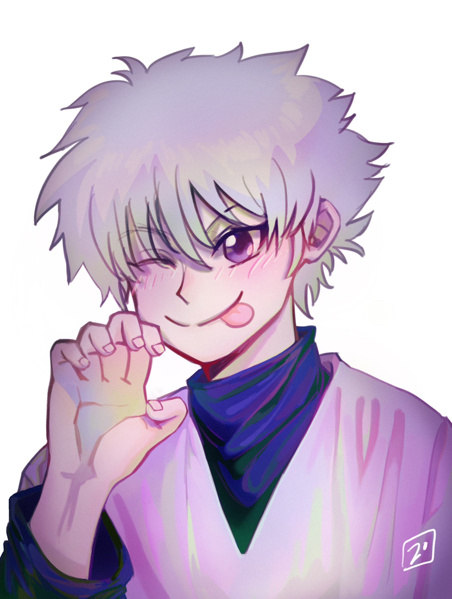
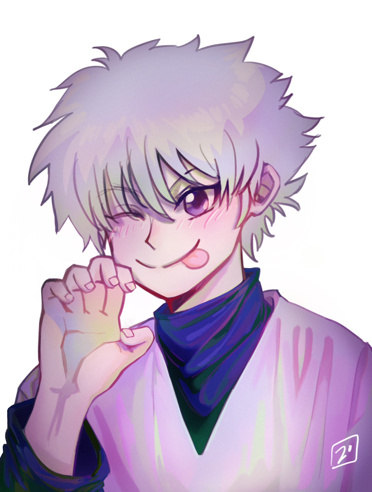

I hope you enjoy your stay.
My name is Jess, also known as Pigeonoodle. I'm from Shanghai, China, currently living in Vancouver, Canada. I studied Illustration at the School of Visual Arts unitl 2024. My passion lies between creating illustrations and also live-action storyboarding. I have a dog, his name is Xiao Bai. My favourite movie is "Perfect Blue" by Satoshi Kon.
This is my Senior Thesis I did in 2024
The title of my thesis is "A Silent Ballad for XiaoBai". I have always wanted to draw a set of pieces that translates the feeling of healing that a loving pet can offer. It would be really hard to imagine I can make it till today without him. My precious friend, companion, and non blood sibling.
Below now are illustrations for my Junior Thesis from 2023.
I based my Juinor Thesis on a book that is very near and dear to my heart called "The Solitude of Prime Numbers" by Paolo Giordano. It details the life of two loners and their fated meeting, how they struggled with their minds and the ugliness of growing up. Yet they found a safe place being beside each other.


Below are my other works I have done in the past.
They belonged to classes I took during my time at SVA, commissioned pieces, or feel good pieces I did during my freetime.


 
